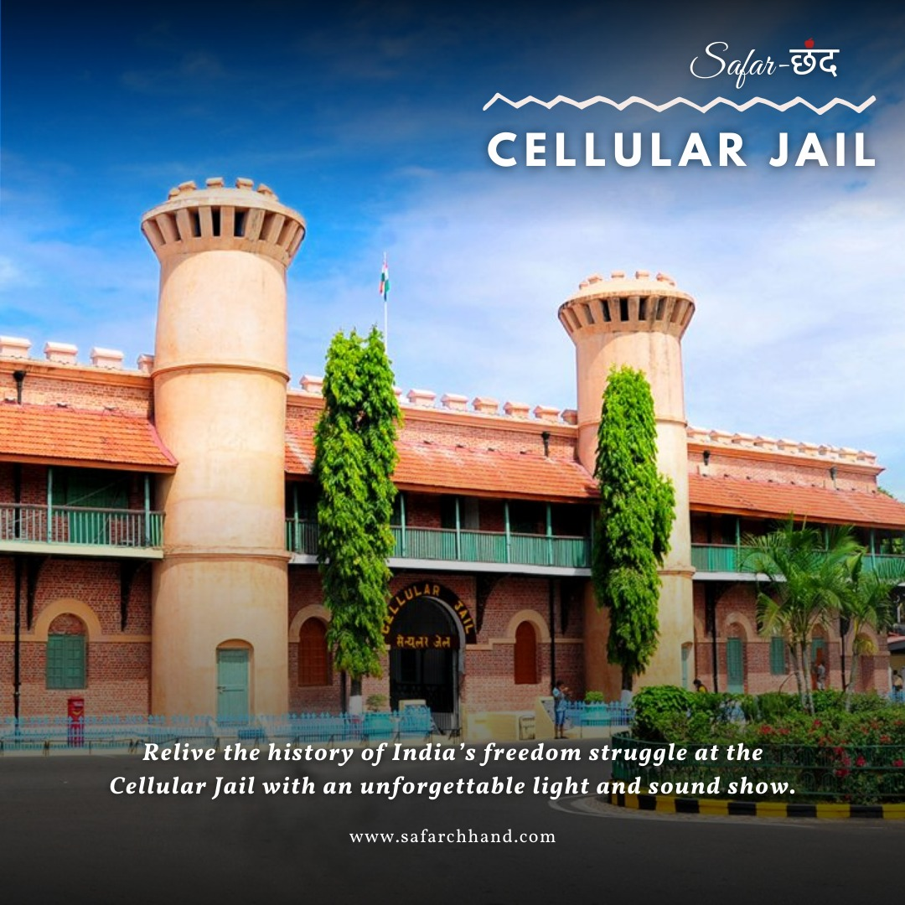
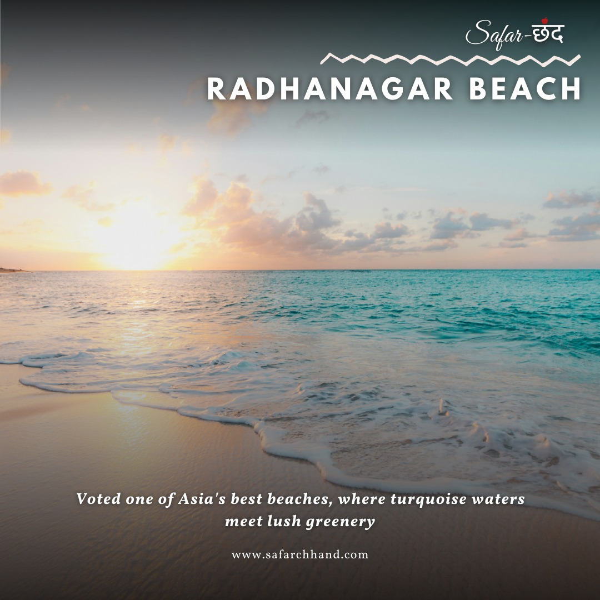

Day 1 - Port Blair and Cellular Jail + Corbyn's Cove Beach + Light & Sound Show

- Arrival at Veer Savarkar Airport (Port Blair): Meet and greet by our representative, followed by a smooth transfer to your hotel for check-in.
- Central Jail: After check-in, explore the historic Cellular Jail, also known as "Kala Pani," where Indian freedom fighters were once imprisoned.
- Corbyn's Cove Beach: After visiting Cellular Jail, head to Corbyn's Cove Beach for some relaxation and leisure time. This serene beach, surrounded by lush green coconut palms, offers a picturesque setting for unwinding and enjoying the coastal beauty. You can take a stroll along the sandy shores or engage in water sports activities like swimming and sunbathing.
- Light and Sound Show: In the evening, attend the captivating light and sound show at the Cellular Jail, which narrates the history of the freedom struggle in a mesmerizing way.
Day 2 -Havelock Island (Swaraj Dweep) – Radhanagar Beach
 Take an early morning ferry from Port Blair to Havelock Island. Ferries usually depart around 6:00 AM or 7:00 AM. It's advisable to book your tickets in advance. The ferry ride takes about 1.5 to 2.5 hours, depending on the service. Upon arrival, check into your hotel or resort. Many accommodations offer early check-in for guests arriving by the morning ferry. Drop off your luggage and freshen up.Visit Radhanagar Beach: Head to Radhanagar Beach, one of the most beautiful beaches in Asia. It's known for its turquoise blue waters and white sandy shores. Spend the afternoon swimming, sunbathing, or simply relaxing on the beach. Stay at Radhanagar Beach to witness the breathtaking sunset. It's one of the highlights of the island. Spend the night at your accommodation in Havelock Island. Many resorts offer evening entertainment or you can take a quiet walk on the beach under the stars.
Day 3 - Havelock island (swaraj Dweep) - Elephant Beach
.jpg)
Enjoy a delicious breakfast at the resort. Embark on a 25-minute boat ride to
Elephant Beach.
Experience snorkeling in the calm, crystal-clear waters. Ideal for beginners, the reef
starts close to the shore with a depth of about 1 meter, showcasing hard coral and
vibrant marine life.
Relax on the scenic beach, perfect for sunbathing. After an exciting day, return to
the resort.
Complimentary Snorkeling
Day 4 -Neil Island (Shaheed Dweep) and explore Bharatpur Beach, Laxmanpur Beach & Natural Bridge.
.jpg) Begin your day with a delightful breakfast at your hotel in Havelock Island.
Complete the check-out process from your hotel.
Head to the Havelock jetty for your ferry transfer to Neil Island. Upon
arrival, our friendly representative will welcome you and assist with the
check-in process at your hotel. Relax and settle into your accommodation,
taking in the serene atmosphere of Neil Island.
Begin your day with a delightful breakfast at your hotel in Havelock Island.
Complete the check-out process from your hotel.
Head to the Havelock jetty for your ferry transfer to Neil Island. Upon
arrival, our friendly representative will welcome you and assist with the
check-in process at your hotel. Relax and settle into your accommodation,
taking in the serene atmosphere of Neil Island.Exploration of Neil Island :-
- Bharatpur Beach: Immerse yourself in the crystal-clear turquoise waters of Bharatpur Beach. Enjoy snorkeling amidst vibrant coral reefs and exploring the diverse marine life.
- Natural Rock Formation: Marvel at the wonders of nature at the Natural Rock Formation. Witness the breathtaking geological creations shaped by time and the elements.
- Laxmanpur Beach: Conclude your day with tranquility at Laxmanpur Beach. Experience panoramic sunset views and take a leisurely walk along the shoreline. Unwind in comfortable rooms and embrace the soothing sounds of nature. Embrace the peaceful ambiance of Neil Island for a restful night's sleep.
Day 5 - Neil island - Port Blair - Chidiyatapu Beach
.jpg)
Begin your day with a delicious breakfast at your hotel on Neil Island.
Complete the check-out process from your hotel. Head to the jetty for a
picturesque ferry ride back to Port Blair. Enjoy the scenic ferry ride back to
Port Blair.
the capital of the Andaman and Nicobar Islands. Upon arrival, our
representative will meet you at the ferry terminal. Transfer to your hotel in
Port Blair and check in.
Visit Chidiyatapu: After lunch, drive to Chidiyatapu, located about 25-30
kilometers from Port Blair. The drive takes around 45 minutes. Chidiyatapu is
known for its lush green mangroves, forest cover, and pristine beaches. It's a
paradise for bird watchers and nature lovers. Spend your afternoon exploring
the natural beauty of Chidiyatapu. Walk through the mangroves, enjoy the
serene beach, and if you're interested in bird watching, you might spot some
unique species. Stay until sunset to witness the spectacular views. The sunset
at Chidiyatapu is often described as one of the most beautiful sights in the
Andaman Islands. After sunset, drive back to your hotel in Port Blair.
Day 6 - Depart from Port Blair
.jpg) After breakfast, check-out from your hotel in Port Blair. Our representative
will escort you to the Port Blair airport, where you'll board your flight with
fond memories of your Andaman adventure.
After breakfast, check-out from your hotel in Port Blair. Our representative
will escort you to the Port Blair airport, where you'll board your flight with
fond memories of your Andaman adventure.
Optional
.jpg) Embark on a scenic road trip from Port Blair to Baratang Island, approximately
100 km away.
Embark on a scenic road trip from Port Blair to Baratang Island, approximately
100 km away.Convoy Travel: Travel through the dense tropical forest and the Jarawa Tribal Reserve. Keep an eye out for glimpses of the Jarawa Tribe members.
Baratang Island Exploration: Arrive at Baratang Jetty and prepare for a fiber boat ride. Enjoy a breathtaking boat ride through the fascinating mangroves, leading to the trek's starting point.
Trek to Limestone Cave: Trek through the dense forest to reach the Limestone Caves. Explore the awe-inspiring natural formations. Learn about the cave's history and geology.
After the trek, return to Port Blair. Relax and enjoy an overnight stay at your hotel, relishing the experiences of this captivating day trip.
Inclusions
- Assistance on Arrival.
- 24 - hour helpline.
- Daily Breakfast.
- Hotel Accommodation on twin / double sharing basis.
- All transfers & sightseeing by Exclusive AC Vehicle in Port Blair,Havelock & Neil.
- Entry Fees & Ferry tickets.
- Snorkeling in Elephant Beach.
Exclusions
- Air fare / train fare.
- Guide.
- Any water sports & Camera Charges
- Expenses of personal nature such as tips, telephone calls,laundry, liquor, Insurance etc.
- Any other item not specified in the Package Inclusions.
- Any increase in Government taxes.
- Supplement will be applicable for Single occupancy.
- Baratang island cost
Terms and Conditions
- All Prices are in Indian Rupees and subject to change without prior notice.
- Price quotes are subject to availability at time of confirmation, we are currently not holding any blocking against the sentquotation.
- Tour prices are valid for Indian Nationals & Foreigners holdingIndian Resident Permit.
- Booking confirmations are subject to availability.
- All Hotels Rooms are subject to availability
- We are not holding any reservations for air seats, hotel rooms,conference rooms etc. Final availability status will only be knownwhen we request for bookings.
- Holiday Surcharge will be additional if applicable. Cancellations:
- All services such as Airlines seats/ Hotel accommodation /ground transportation for tour are prepaid well in advance.
- We are liable to pay penalties to all our suppliers / vendor if theseservices are released within the below mentioned time frame
- If circumstances make you cancel the tour, the cancellation mustbe intimated to us in writing. Such Cancellation will attract thefollowing cancellation charges. If a cancellation is made Charges per person.
- 45 -35 days prior to departure of your tour 30% of tour cost
- 34 - 25 days prior to departure of your tour 50% of tour cost
- 24 -15 days prior to departure of your tour 75% of tour cost
- 14 days or less prior to departure of your tour or a NO SHOW onthe tour 100% of tour cost